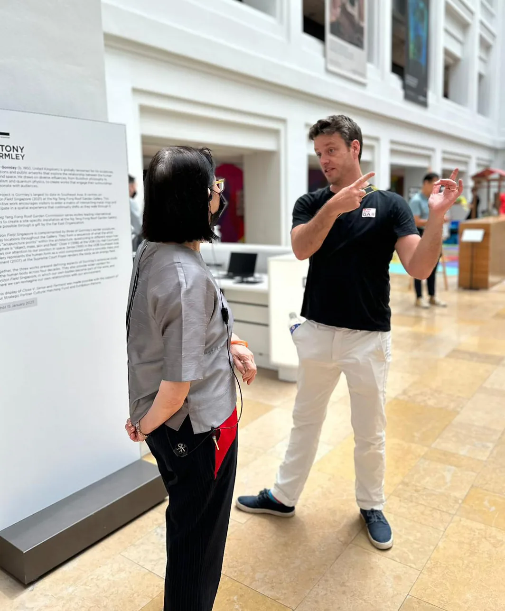
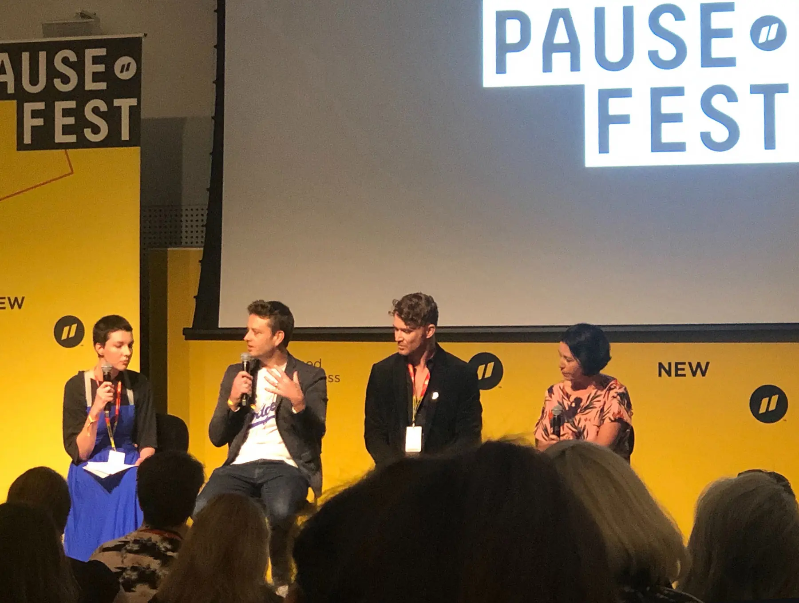
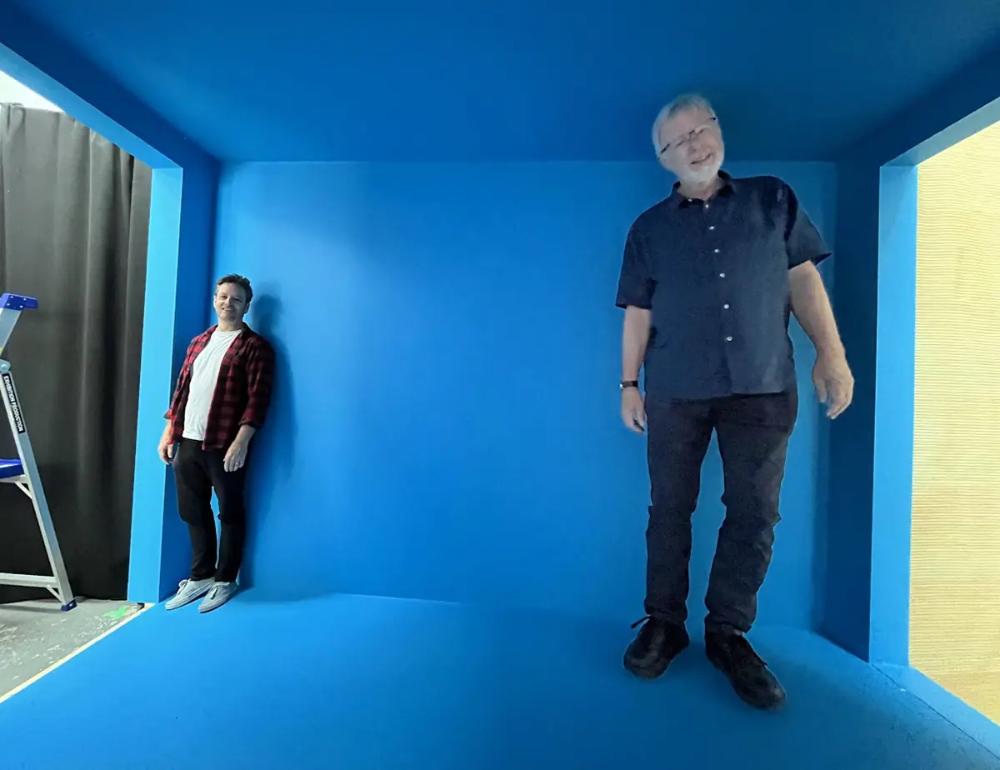
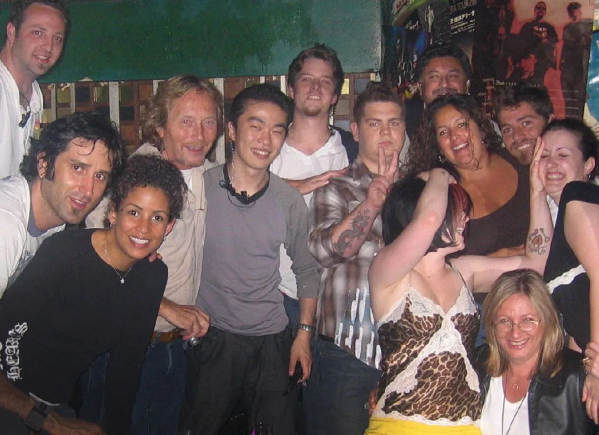

What do you do?
I'm an experience designer working across cultural institutions, public space, and visitor attractions. Most of my work has been in museums, but the setting matters less than what happens between people, objects, and ideas. I try to shape experiences so they feel clear, relevant, and enjoyable. As David Walsh likes to say, "people like Mona more than most museums because it's fun."

Research project with the National Gallery of Singapore (photo: Nic Whyte)
How would you describe your approach?
Start with the story. Whose story is it? What are the different perspectives? Then find a way in. Some of the subjects are huge. You have to choose a lens that meets people where they are and gives them a way to engage. There’s a Kurt Vonnegut line I come back to often: "The most damning revelation you can make about yourself is that you do not know what is interesting and what is not." The goal is something that holds attention and stays with people.
What are you actually trying to achieve in your work?
With experience design, people give you their time. It’s not transactional. They’re not trying to get in and out, they’ve chosen to be there. The work is to make that time count. That means you have to spend a great deal of time identifying relevance for the audience, crafting story, and finding ways for participation. If you don’t, people simply tune out. Making a meaningful connection sits at the centre of it.
Where does that come from?
Curiosity, mostly. When I get into something, I go all in. As a kid I didn’t just play with Lego, I took over a garage with a full city of Lego. It’s been the same ever since. Every project is a chance to channel my energy, learn something new, and take that learning and share it in delightful ways.

Pause Fest panel in 2020 (photo: Blair Burke)
What kinds of projects interest you now?
Projects with multiple perspectives. The messier the better. The world doesn’t resolve into clean narratives, but it can still be compelling. I’m interested in giving people some credit. Let them make choices. Let them find their own way through. Participation matters as it’s what makes things stick.
I’ve been thinking a lot about memory lately... How people actually hold onto ideas through association, proximity, spatial recall. Most experiences ignore this. They present information didactically and hope it sticks. I’m more interested in shaping how things are encountered so they can be remembered.
What role do you tend to play?
It varies project to project, but I often get involved early and help define the vision. I then sit between disciplines like architecture, curatorial, content development, and technology, etc to help guide the vision as we start designing and building. And then I’m always wearing my ‘visitor experience’ cap, making sure we stay focused on the visitor or audience. A lot of the work is listening, shaping, editing, and making decisions at the right time.

Testing a prototype with Adrian Spinks, head of exhibitions at Mona (photo: Julien de Sainte-Croix)
What do you care about when working with others?
Energy. People who actually care about what they’re making. Box ticking kills things. We don’t get that many chances to do this kind of work. It should count. The best outcomes come when people build on each other’s ideas, not defend their own.
What are you wary of?
Egos. Bureaucracy. The idea that something is already solved on paper. You figure things out by making and iterating. If you don’t allow for things to evolve the end experience will be shit. You have to hold things lightly enough to let them change.

On the road with The Osbournes 2004
What are you interested in outside of work?
Books, music, cities, dérives... Paying attention to how things are arranged and why. I'm drawn to collections. How things sit next to each other and start to mean something. Moving around a lot has changed what a collection even is for me. More of it is digital now, which opens up different ways of organising and rediscovering things.
What's next?
I’ve just settled in Amsterdam and I’m setting up my own studio. I spent a long stretch in Australia (and America before that), and it was time for a different context. New places sharpen your thinking. I’m looking to connect with people, take on projects, and see what develops. It’s a bet on myself.
So what should someone do if they want to work with you?
Reach out. If there's something worth making or figuring out, I'm interested.